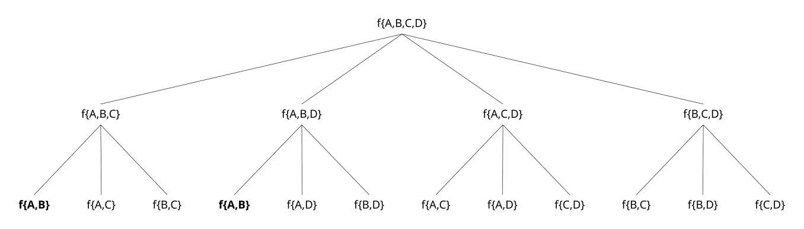
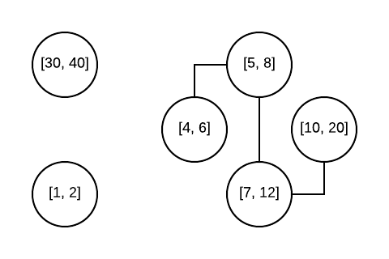
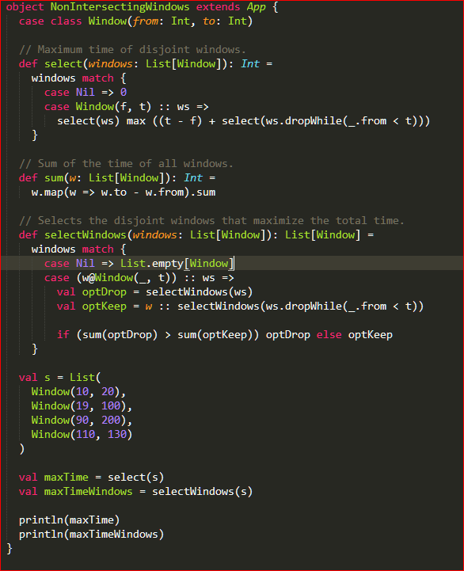

Will it blend compute?
Finding the optimal permutation of overlapping segments for maximum non-overlapping yield
The (real) problem
Given a set of scenes, each with it's own "score", find the subset of non-overlapping scenes these that maximizes sum of the "score"
(psst.. "score" is our favourite word here)
also, when the sum is the same (tie), we should pick the one that starts the earliest
A scene:
- Defined by a start and end frame (inclusive)
- A special "score" whoose calculation is outside of this scope.
The (generic) problem
Given a set of weighted-intervals, find the optimal subset without overlapping intervals which maximizes the sum of their weights
Again, in case of ties, pick the subset with earliest start
Weighted-interval:
$$[start, end] \Rightarrow weight$$
Set of weighted-intervals:
$$ \{ [1,2]\Rightarrow 1,[4,10]\Rightarrow 6\} $$
Modeling v1 - The naïve approach
- Generate all possible subsets
- Filter out the ones that have overlaps
- Calculate the weight sum for each subset
- Pick the best one
How large is the search space?
Example: Given the set $S = [I_1, ..., I_{10}]$
$$ {}^{10}\!C_{10} \times {}^{10}\!C_{9} \times ... \times {}^{10}\!C_{1}$$
$$ = \sum_{0 \leq k \leq n} {}^{10}\!C_{k} = 2^{10}$$
..but how does it scale as $n$ grows..?
How large is the search space?
| $n$ | Combinations ($2^n$) | Computable useful time? |
|---|---|---|
| 10 | 1024 | Y |
| 15 | 32768 | Y |
| 17 | 131072 | Y... Kind off |
| 19 | 524288 | Nope... Many minutes |
| 25 | 33554432 | Good luck capt'n (+ no memory) |
Bruteforcing is rarely the solution, as seen here.
..and don't forget that each set is not trivial to compute!!! (overlaps + sum)
Modeling v2 - Decomposing D&C
Given $ S_n = \{I_1, ..., I_n\}\\$
$$f(S_n) = \begin{cases} \emptyset, & |S| = \emptyset \\ I_1, & |S| = 1 \\ S , & |S| > 1 \land (\forall_{A,B} \in S \land A \neq B : \neg intersects(A,B) \\ max \left(\begin{aligned} f(S \setminus \{A\}) ,\\ f(S \setminus \{B\})) \end{aligned}\right) , & |S| > 1 \land (\exists_{A,B} \in S \land A \neq B : intersects(A,B) \\ \end{cases} $$
- No intervals $\Rightarrow$ empty solution
- One interval $\Rightarrow$ itself
- Multiple without overlaps $\Rightarrow$ the set itself
- Multiple with overlaps $\Rightarrow$
- For each overlapping interval $A,B$, generate subset without $I$
- Evaluate all these subsets recursively
- Pick the best of all of these.
But there are some issues with the divide-and-conquer approach..
- There are a lot of combinations that are potentially repeated (so are explored twice)
- (naïve) Testing for any $A,B \in S$ that might intersect each other is $N^2$
- We are "carrying around" a lot of intervals that will never be required for sub-problems
- Most of the times, the optimal solution matches the "greedy" solution, so we are wasting resources exploring sub-optimal states
Optimization - repeated state exploration
This is a tiny example! But almost half of the states are duplicated. /r/theydidthemath
Solution: Store the sub-solutions for each sub-problem and only compute it not previously computed.
This category of optimisations is known as memoization (i.e.: "caching")
Which was straight-forward with Google Commons
val cache: Cache< Set < Interval >, Set < Interval > > = CacheBuilder
.newBuilder()
.recordStats()
.build()
Roughly 25% performance gain ${}^{\mbox{citation needed}}$
Optimization time
"intersection between $n$ elements is quadratic" (plus bonus cut)
Even though the numbers for intervals are quite low, $30^2$ is still 900. As such, the complexity from this step can add up for each nested sub-problem attempted.
Plus, everytime we remove an overlapping interval and test a subset, we are re-testing intersections again which shouldn't be needed
Also, caching results from $intersects(A, B)$ is pointless since it's faster to recalculate than to check cache
There is a way of calculating this faster, with some interesting side-effects we can use, if we model this problem as a graph problem.
Let $G$ be a graph with nodes $I_n$ , in which node $I_i$ is connected to node $I_j$ $\iff$ they intersect each other.
Any interesting properties you can identify?
disconnected components
Nodes that are isolated $=>$ automatically part of the solution
connected components
Connected nodes $=>$ at least one of them cannot be part of the solution
So we have to test all permutations of one removal
How to find all connected/disconnected components?
A data-structure called "union-find" allows us to do exactly this.
It is used in Tarjan's algorithm used to find strongly-connected components (we don't need this) and in Kruskal's algorithm (minimum spanning tree).

With this knowledge we can perfect our solution further
Given $$ \begin{aligned} S_n = \{I_1, ..., I_n\}\\ S_{DC} = \mbox{intervals in disconnected components}\\ S_{CC} = \mbox{set of intervals in connected components}\\ \end{aligned} $$
$$f(S_n) = \begin{cases} \emptyset, & |S| = \emptyset \\ I_1, & |S| = 1 \\ S , & S \cap S_{DC} = S \\ \bigcup\limits_{i \in S_{DC}} ({S_{DC}}_{i}) \cup \bigcup\limits_{j \in S_{CC}} max \left(\begin{aligned} {\displaystyle\mathop{{{{\forall}}}}_{I \in {S_{CC}}_{j}}} f({S_{CC}}_{j} \setminus \{I\}) \end{aligned}\right) ,\\ , & S_{CC} \neq \emptyset \\ \end{cases} $$
Roughly 75% performance gain ${}^{\mbox{citation needed}}$
(last) Optimization time
Still too many damn permutations!
When we have over 20~30 overlapping segments in the $S_{CC}$, there are still too many states to explore that will take too much time.
We need to model the problem differently.
Instead of generating the possible permutations for removal, we are just going to pick the best from taking the first interval in the set or NOT.
Given $$ \begin{aligned} S_n = \{I_1, ..., I_n\}\\ S_{DC} = \mbox{intervals in disconnected components}\\ S_{CC} = \mbox{set of intervals in connected components}\\ {S_{CC}}_{I_1} = \mbox{first interval in a set of intervals in the connected components}\\ \end{aligned} $$
$$f(S_n) = \begin{cases} \emptyset, & |S| = \emptyset \\ I_1, & |S| = 1 \\ S , & S \cap S_{DC} = S \\ \bigcup\limits_{w \in S_{DC}} ({S_{DC}}_{w}) \cup \bigcup\limits_{j \in S_{CC}} max \left(\begin{aligned} &f({S_{CC}}_{j} \setminus \{I_1\}) ,\\ I_1 \cup &f({S_{CC}}_{j} \setminus \{I_x \in {S_{CC}}_{j}, intersects(I_1, I_x)\} ) \end{aligned}\right) , & S_{CC} \neq \emptyset \\ \end{cases} $$
Roughly 'very many big' performance gain ${}^{\mbox{citation needed}}$
Guest solution
from Scala*: https://www.linkedin.com/in/orium/
*not tested or benchmarked, but cool to see.
